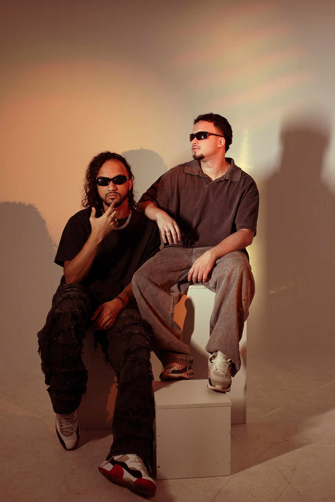
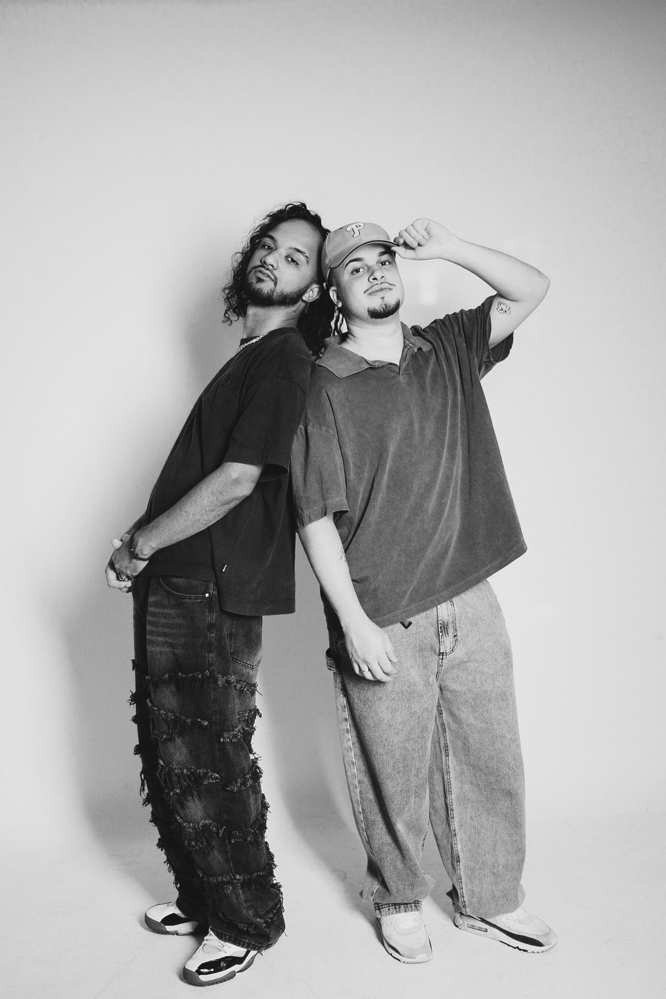
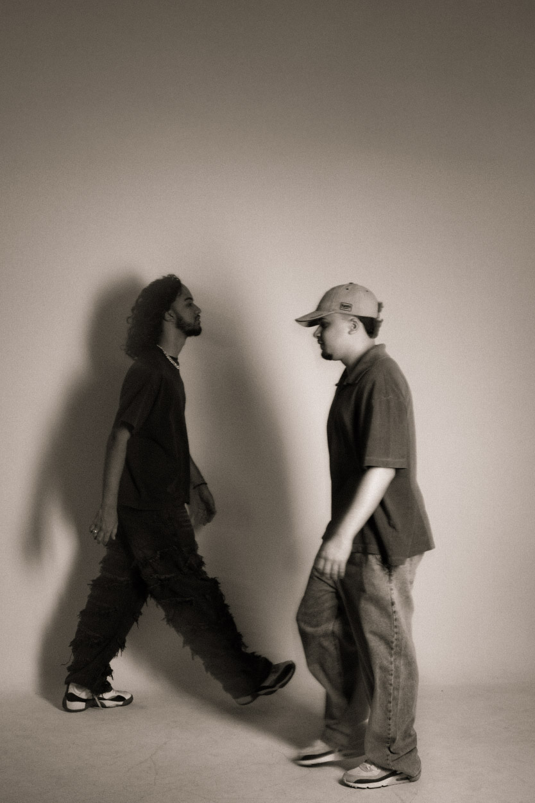
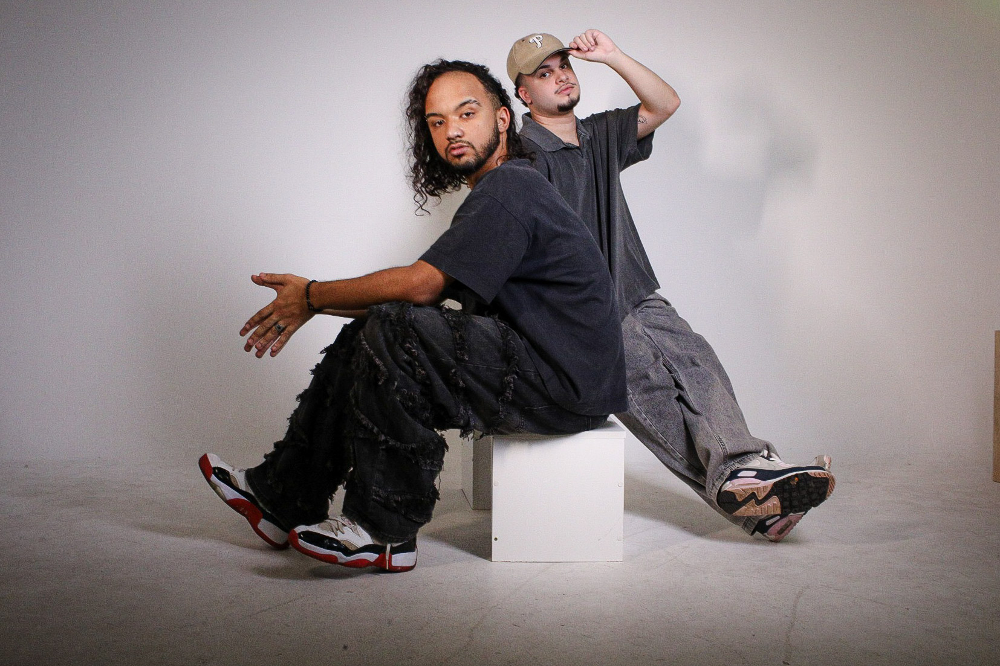

O Projeto

INNTUTION é um projeto de música eletrônica que nasce do encontro entre Axtage e Folker, amigos há mais de 15 anos que no projeto, transformam suas experiências complementares em uma identidade sonora e visual compartilhada.
O projeto une a produção e a experiência musical de Folker à curadoria musical e vivência de pista de Axtage.
Indie Dance e Melodic Techno são pontos de partida, não fronteiras, sem se prender a gêneros, o duo explora texturas analógicas, melodias e gêneros musicais de diferentes épocas.
“O contraste entre suas visões dá forma ao som; a intuição conduz a seleção e a construção dos sets. Na pista, o convite é dançar por instinto e deixar a interpretação para depois.”
Sonic Identity // Axtage & Folker
Sets construídos pela intuição, mesclando a vivência de pista e curadoria de Axtage com as texturas analógicas e produção de Folker.
Fragmentos Visuais
dance by instinct | visual frequencies

